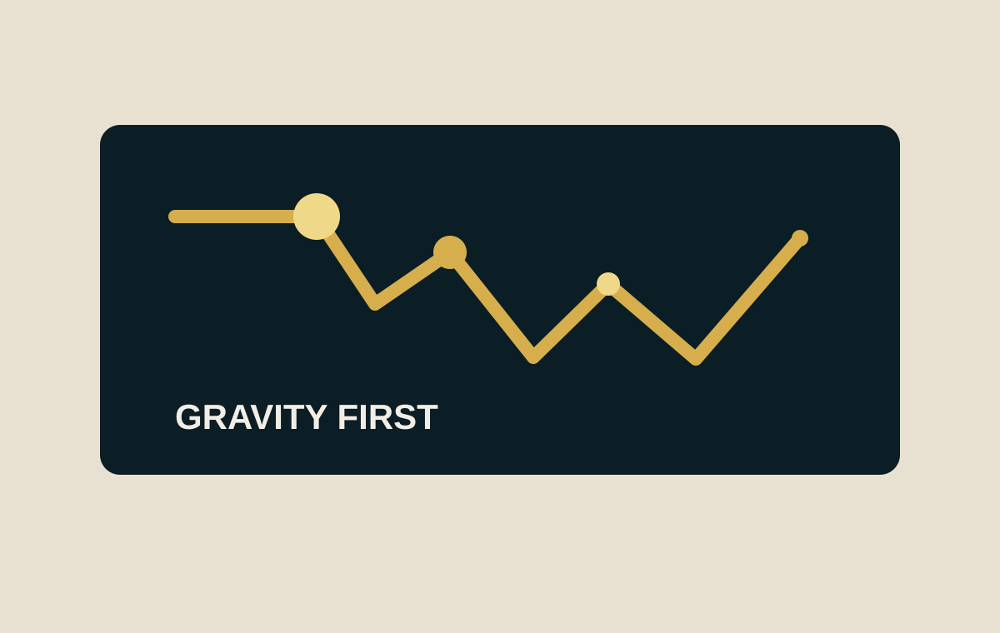
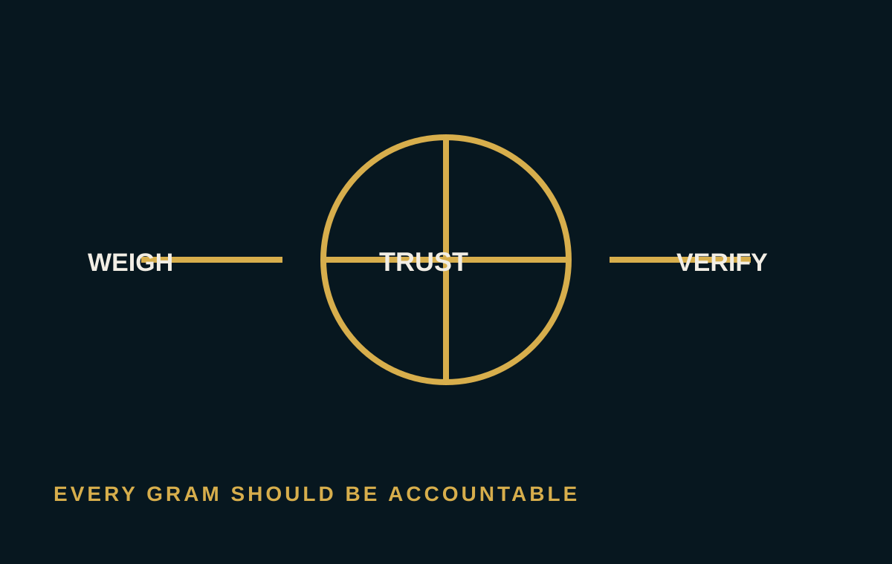

◢ ◣ ◢ ◣ ◢
LISTEN · READTHE NORSE
CONCEPT
CONCEPT
The Norse Concept
Listen to the original recorded explainer or read the reviewed edition on replacing mercury-dependent small-scale gold recovery with an ore-led physical alternative.


NEWS & INSIGHTS
Conference appearances, verified project milestones and technical insights keep NORSE current.
Listen to the original recorded explainer or read the reviewed edition on replacing mercury-dependent small-scale gold recovery with an ore-led physical alternative.

The ore determines liberation, classification and the recovery route.

Sampling, assays and mass balance turn recovery into a measurable result.